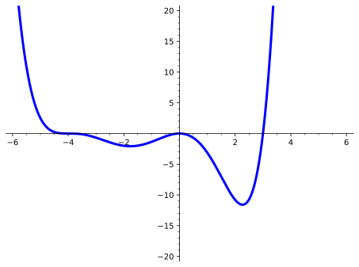

Determine the zeros of a real polynomial function, write a polynomial function given information about its zeros and their multiplicities, and apply the Factor Theorem and the Fundamental Theorem of Algebra.
Subsection4.4.1Activities
Activity4.4.1.
Remark4.4.2.
Recall that to find the \(x\) intercepts of a linear or quadratic function, let \(y=0\) and solve for \(x\text{.}\)
(a)
What is the factored form of the function, \(f(x)=x^2+2x-15\text{?}\)
0
\(\displaystyle (x-3)(x+5)\)
\(\displaystyle (x+3)(x-5)\)
\(\displaystyle (x-3)(x-5)\)
\(\displaystyle (x+3)(x+5)\)
(b)
What are the \(x\) intercepts of the function above?
0
\(-3\) and \(5\)
\(3\) and \(-5\)
\(-3\) and \(-5\)
\(3\) and \(5\)
(c)
How do the \(x\) intercepts relate to the factored form of the function?
Definition4.4.3.
Real zeros of a polynomial function are the same as the \(x\) intercepts.
Theorem4.4.4.Factor Theorem.
A number \(c\) is a zero of a polynomial function \(f(x)\) if and only if \(x-c\) is a factor of \(f(x)\text{.}\)
Activity4.4.5.
Find the zeros of the polynomial by factoring \(f(x)=x^3-x^2-56x\text{.}\)
0
\(\displaystyle -7\)
\(\displaystyle 8\)
\(\displaystyle -7,8\)
\(\displaystyle 0,-7,8\)
\(\displaystyle 7,-8\)
Activity4.4.6.
(a)
Given \(x-3\) is a factor of the polynomial \(f(x)=2x^3-7x^2-33x+108\text{,}\) find the remaining factors using division.
\(\displaystyle (x+4),(2x-9)\)
\(\displaystyle (x-4)(2x+9))\)
\(\displaystyle (2x+3)(x-9))\)
\(\displaystyle (2x-3)(x+9))\)
(b)
How many zeros does the function have?
\(\displaystyle 1\)
\(\displaystyle 2\)
\(\displaystyle 3\)
\(\displaystyle 4\)
Definition4.4.7.
The multiplicity of a zero is the number of times the corresponding linear factor appears in the factored form of the polynomial function.
Definition4.4.8.
The degree of a polynomial function is the sum of the multiplicities of the zeros.
Activity4.4.9.
Given the function \(5y-4=x\text{,}\) what is the degree of the function?
\(\displaystyle 0\)
\(\displaystyle 1\)
\(\displaystyle 5\)
Activity4.4.10.
(a)
Given \(y=5x^2+7x-6\text{,}\) what is the degree of the function?
\(\displaystyle 0\)
\(\displaystyle 1\)
\(\displaystyle 2\)
\(\displaystyle 5\)
(b)
Find the zeros of the quadratic function above. How many are there?
\(\displaystyle 0\)
\(\displaystyle 1\)
\(\displaystyle 2\)
\(\displaystyle 5\)
Theorem4.4.11.Fundamental Theorem of Algebra.
A polynomial function of degree \(n > 0\) has at least one zero.
Activity4.4.12.
(a)
Given the polynomial,\(f(x)=(3x-2)(x+1)^2(x-6)^3\text{,}\) find all the zeros of the function with their corresponding multiplicities. What is the degree of the function?
\(\displaystyle 3\)
\(\displaystyle 5\)
\(\displaystyle 6\)
Activity4.4.13.
(a)
Given \(f(x)=x^4-5x^3+x^2+21x-18\text{,}\) find all the zeros of the function with their corresponding multiplicities. What is the degree of the function?
\(\displaystyle 5\)
\(\displaystyle 4\)
\(\displaystyle 3\)
(b)
How many zeros are there in total?
\(\displaystyle 5\)
\(\displaystyle 4\)
\(\displaystyle 3\)
Activity4.4.14.
(a)
Given \(-1\) is a zero with multiplicity \(2\text{,}\)\(4\) is a zero with multiplicity \(1\) and \(7\) is a zero with multiplicity \(3\text{,}\) write a polynomial function in factored form.
Activity4.4.15.
(a)
Find the complex zeros for the function, \(f(x)=x^2+16\text{.}\)
Theorem4.4.16.Conjugate Zeros Theorem.
Let \(f(x)\) be a polynomial function with real coefficients. If \(a+bi\text{,}\) where \(b\) is not zero, is a complex zero of the function, then the conjugate \(a-bi\) is also a zero of the function.
Activity4.4.17.
Write the polynomial function in factored form using information from the graph below.

Figure4.4.18.
(a)
Using the given graph, what are the real zeros of this function? Select all that apply.
0
1
-3
3
4
-4
(b)
What are the least possible multiplicities for each zero?
(c)
What is the least degree of the function?
3
4
5
6
(d)
Write the function \(f(x)\) in factored form using linear factors.
Activity4.4.19.
Given the function \(f(x)=2x^4-4x^3+10x^2-16x+8\text{,}\)
(a)
Find all the zeros and their corresponding multiplicities.
(b)
Write a function for the graph \(f(x)\) in factored form using linear factors.
Activity4.4.20.
The zeros of a function are \(x=2\text{,}\) with multiplicity \(1\text{,}\)\(x=-1\text{,}\) with multiplicity \(2\) and \(x=i\text{.}\)
(a)
Given the information above, find a polynomial function with real coefficients of least degree.